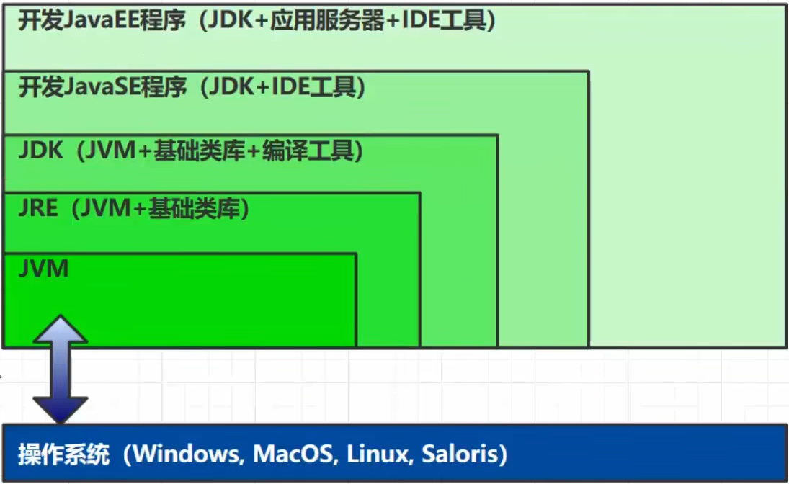
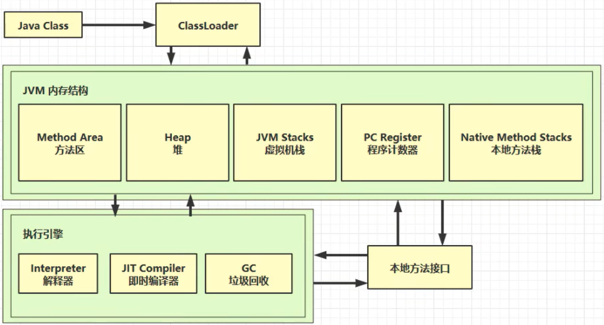
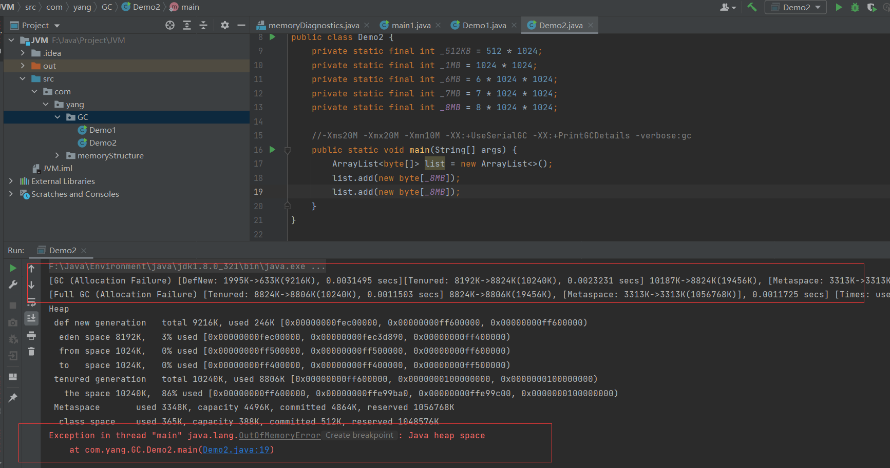
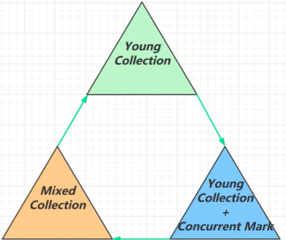

1.什么是 JVM ？
1.1 定义
Java Virtual Machine ，Java 程序的运行环境（Java 二进制字节码的运行环境）
1.2 好处
- 一次编译，处处执行
- 自动的内存管理，垃圾回收机制
- 数组下标越界检查
- 多态
1.3 比较
JVM、JRE、JDK 的关系如下图所示

2.常见的 JVM
3.学习路线

4.内存结构
4.1 程序计数器
4.1.1 定义
Program Counter Register程序计数器（寄存器）- 作用：是记录下一条 jvm 指令的执行地址行号
- 特点：
- 是线程私有的
- 不会存在内存溢出
4.1.2 作用
1 | // jvm指令 Java代码 |
- 解释器会解释jvm指令为机器码交给 cpu 执行，程序计数器会记录下一条jvm指令的地址行号，这样下一次解释器会从程序计数器拿到指令然后进行解释执行
- 多线程的环境下，如果两个线程发生了上下文切换，那么程序计数器会记录线程下一行指令的地址行号，以便于接着往下执行
4.2 虚拟机栈
4.2.1 定义
- 每个线程运行需要的内存空间，称为虚拟机栈
- 每个栈由多个栈帧（Frame）组成，对应着每次调用方法时所占用的内存（参数，局部变量，返回地址）
- 每个线程只能有一个活动栈帧，对应着当前正在执行的方法
问题辨析：
- 垃圾回收是否涉及栈内存？
- 不会。栈内存是方法调用产生的，方法调用结束后会弹出栈
- 栈内存分配越大越好吗？
- 不是。因为物理内存是一定的，栈内存越大，可以支持更多的递归调用，但是可执行的线程数就会越少
- 方法呢的局部变量是否线程安全
- 如果方法内部的变量没有逃离方法的作用访问，它是线程安全的
- 如果是局部变量引用了对象，并逃离了方法的访问，那就要考虑线程安全问题
4.2.2 栈内存溢出
栈帧过大、过多、或者第三方类库操作，都有可能造成栈内存溢出
java.lang.stackOverflowError使用 -Xss256k 指定栈内存大小
4.2.3 线程运行诊断
案例一：cpu 占用过多
- 解决方法：
- Linux 环境下运行某些程序的时候，可能导致 CPU 的占用过高，这时需要定位占用 CPU 过高的线程
- 1.top 命令，查看是哪个进程占用 CPU 过高
- 2.ps H -eo pid, tid（线程id）, %cpu | grep 刚才通过 top 查到的进程号，通过 ps 命令进一步查看是哪个线程占用 CPU 过高
- 3.jstack 进程 id，通过查看进程中的线程的 tid ，刚才通过 ps 命令看到的 tid 来对比定位，注意 jstack 查找出的线程 id 是 16 进制的，需要转换
案例二：程序运行很长时间没有结果
4.3 本地方法栈
一些带有 native 关键字的方法就是需要 JAVA 去调用本地的C或者C++方法，因为 JAVA 有时候没法直接和操作系统底层交互，所以需要用到本地方法栈，服务于带 native 关键字的方法
4.4 堆
4.4.1 定义
Heap 堆
- 通过new关键字，创建的对象都会被放在堆内存
特点
- 它是线程共享，堆内存中的对象都需要考虑线程安全问题
- 有垃圾回收机制
4.4.2 内存溢出
java.lang.OutofMemoryError ：java heap space. 堆内存溢出- 可以使用 -Xmx8m 来指定堆内存大小
4.4.3 内存诊断
- jps 工具
- 查看当前系统中有哪些 java 进程
- jmap 工具
- 查看堆内存占用情况 jmap - heap 进程id
- jconsole 工具
- 图形界面的，多功能的监测工具，可以连续监测
- jvisualvm 工具
4.5 方法区
4.5.1 定义
- Java 虚拟机有一个在所有 Java 虚拟机线程之间共享的方法区域
- 方法区域类似于用于传统语言的编译代码的存储区域，或者类似于操作系统进程中的“文本”段
- 它存储每个类的结构，例如运行时常量池、字段和方法数据，以及方法和构造函数的代码，包括特殊方法，用于类和实例初始化以及接口初始化方法区域是在虚拟机启动时创建的
- 尽管方法区域在逻辑上是堆的一部分，但简单的实现可能不会选择垃圾收集或压缩它。此规范不强制指定方法区的位置或用于管理已编译代码的策略。方法区域可以具有固定的大小，或者可以根据计算的需要进行扩展，并且如果不需要更大的方法区域，则可以收缩。方法区域的内存不需要是连续的
4.5.2 结构
- 永久代用的堆内存
- 元空间用的本地内存
4.5.3 方法区内存溢出
- 1.8以前会导致永久代内存溢出
java.lang.OutOfMemoryError: PermGen space- -XX:MaxPermSize=8m
- 1.8以后会导致元空间内存溢出
java.lang.OutOfMemoryError: Metaspace- -XX:MaxMetaspaceSize=8m
4.5.4 运行时常量池
- 常量池：就是一张表，虚拟机指令根据这张常量表找到要执行的类名、方法名、参数类型、字面量等信息
- 运行时常量池：常量池是 *.class 文件中的，当该类被加载，它的常量池信息就会放入运行时常量池，并把里面的符号地址变为真实地址
4.6 直接内存
5.垃圾回收机制
5.1 如何判断对象可以回收
5.1.1引用计数法
定义
- 只要对象被引用就+1，引用两次就+2，如果某个变量不在引用就-1
- 当对象引用计数为0的时候就会被垃圾回收
弊端
- 循环引用，A对象引用B对象，B对象引用计数+1，B对象引用A，A对象引用计数+1
- 当没有谁再引用他们，他们不能被垃圾回收，因为引用计数没有归零
- python在早期垃圾回收用的引用计数法
5.1.2 可达性分析算法（java虚拟机采用的方法）
定义
- java虚拟机中的垃圾回收器采用的是可达性分析算法
- 扫描堆中的对象，看是否能够沿着GC Root(根对象) 为起点的引用链找到该对象，找不到就可以进行垃圾回收
哪些对象可以作为GC Root
System Class
Natice Stack（本地栈）
锁（同步锁机制）
Thread(活动线程)
a. java虚拟机栈中的引用的对象
b.本地方法栈中的JNI（native方法）引用的对象
c.方法区中的类静态属性引用的对象。（一般指被static修饰的对象，加载类的时候就加载到内存中。）（static object)
d.方法区中的常量引用的对象。 (object)
如何查看GC Root对象
- 通过MAT工具(Eclipse的Memory Analyzer)
5.1.3 五种引用
强引用
- 只有GC Root 都不引用该对象时，才会回收强引用对象
软引用
有用但非必须的引用
- 当GC Root 不在指向软引用对象时，且内存不足时，会回收软引用所引用的对象
- 可以配合引用队列来释放软引用自身
如上图 B对象不在引用A2对象且内存不足时，软引用所引用的A2对象会被回收
软引用本身不会被清理，需要使用引用队列
弱引用
- 当GC Root 不再指向弱引用对象时，不管内存是否不足，会回收弱引用所引用的对象
- 可以配合引用队列来释放弱引用自身
- 弱引用的使用和软引用类似，只是将 SoftReference 换为了 WeakReference
虚引用
- 必须配合引用队列使用，主要配合 ByteBuffer 使用，当虚引用对象所引用的对象被回收以后，虚引用对象就会被放入引用队列中，由 Reference Handler 线程调用虚引用相关方法释放直接内存
- 虚引用的一个体现是释放直接内存所分配的内存，当被引用对象ByteBuffer被垃圾回收以后，虚引用对象Cleaner就会被放入引用队列中，然后调用Cleaner的clean方法来释放直接内存
- 如上图，B对象不再引用ByteBuffer对象，ByteBuffer就会被回收。但是直接内存中的内存还未被回收。这时需要将虚引用对象Cleaner放入引用队列中，然后调用它的clean方法来释放直接内存
终结器引用
- 无需手动编码，在其内部配合引用队列使用
- 在垃圾回收时，终结器引用入队（被引用对象 暂时没有被回收），再由 Finalizer 线程通过终结器引用找到被引用对象并调用它的 finalize 方法，第二次 GC 时才能回收被引用对象
- 当某个对象不再被其他的对象所引用时，会先将终结器引用对象放入引用队列中，然后根据终结器引用对象找到被引用的对象，然后调用被引用对象的finalize方法。调用以后，该对象再第二次GC就可以被垃圾回收了
- 如上图，B对象不再引用A4对象。这是终结器引用对象就会被放入引用队列中，引用队列会根据它，找到它所引用的对象。然后调用被引用对象的finalize方法。调用以后，该对象就可以被垃圾回收了
- 引用队列：软引用和弱引用可以配合引用队列
5.2 垃圾回收算法
5.2.1 标记清除
定义：在执行垃圾回收时，先标记完引用对象，然后垃圾收集器根据标识清除没有被标记的对象
优点：速度快
缺点：容易产生大量的内存碎片，如上图，清理没有引用的对象后，会存在内存的空间浪费
5.2.2 标记整理
定义：在执行垃圾回收时，先标记完引用的对象，然后清除没有被引用的对象，最后整理剩余的空间，避免因内存碎片导致的问题
优点：不会存在内存碎片
缺点：速度慢，因为整理内存是为了避免内存浪费，所以整理需要消耗一定的时间，导致效率较低时间换取空间
5.2.3 复制
定义：将内存分为两个等大小的区域，FROM和TO。先将FROM中被GC Root引用的对象进行标记，将存活的对象从FROM放入TO中，再回收FROM区域中没有被引用的对象。然后交换FROM和TO
优点：这样避免的内存碎片的问题
缺点：但需要双倍的内存空间空间换取时间
5.3 分代垃圾回收
- 回收流程
- 对象首先分配在伊甸园区域
- 新生代伊甸园空间不足时，就会触发minor gc，伊甸园和幸存区From中存活的的对象复制到幸存区To中，存活的对象年龄加1并交换幸存区from和幸存区to
- minor gc会引发stop the world ，暂停其他用户的线程，等垃圾回收结束后，用户线程才恢复
- 当对象寿命超过阈值时，会从新生代注入到老年代，最大寿命是15（4bit）
- 当老年代空间不足，会先尝试触发minor gc， 如果空间仍不足，那么就触发full gc，stop the world 的时间更长
5.4.1 相关VM参数
| 含义 | 参数 |
|---|---|
| 堆初始大小 | -Xms |
| 堆最大大小 | -Xmx 或 -XX:MaxHeapSize=size |
| 新生代大小 | -Xmn 或 (-XX:NewSize=size + -XX:MaxNewSize=size ) |
| 幸存区比例（动态） | -XX:InitialSurvivorRatio=ratio 和 -XX:+UseAdaptiveSizePolicy |
| 幸存区比例 | -XX:SurvivorRatio=ratio |
| 晋升阈值 | -XX:MaxTenuringThreshold=threshold |
| 晋升详情 | -XX:+PrintTenuringDistribution |
| GC详情 | -XX:+PrintGCDetails -verbose:gc |
| FullGC 前 MinorGC | -XX:+ScavengeBeforeFullGC |
5.4.2 GC分析
1 | /* |
大对象直接放入到老年代
内存溢出

一个线程内的内存溢出，不影响主线程运行
5.4 垃圾回收器
相关概念
并行执行的线程之间不存在切换
并发操作系统会根据任务调度系统给线程分配线程的 CPU 执行时间，线程的执行会进行切换
并行收集
- 并行：多个事情同一时刻进行
- 在同一时刻，有多个程序在多个处理器上运行（每个处理器运行一个程序）
- 并行收集：指多条垃圾收集线程并行工作，但此时用户线程仍处于等待状态
并发收集
- 并发： 指在某时刻只有一个事件在发生，某个时间段内由于 CPU 交替执行，可以发生多个事件。 在同一cpu上同时运行多个程序
- 指用户线程与垃圾收集线程同时工作（不一定是并行的可能会交替执行）。用户程序在继续执行，而垃圾收集程序在另一个CPU上
吞吐量
- 即CPU用于运行用户代码的时间与CPU总消耗时间的比值（吞吐量=运行用户代码时间/（运行用户代码时间+垃圾收集时间））
- 例如：虚拟机共运行100分钟，垃圾收集器花掉1分钟，那么吞吐量就是99%
5.4.1 串行
1 | -XX:+UseSerialGC = Serial + SerialOld |

特点
- 单线程
- 内存较小，个人电脑（CPU核数较少）
- 安全点：让其他线程都在这个点停下来，以免垃圾回收时移动对象地址，使得其他线程找不到被移动的对象
- 因为是串行的，所以只有一个垃圾回收线程。且在该线程执行回收工作时，其他线程进入阻塞状态
5.4.1.1 Serial收集器
Serial收集器是最基本的、发展历史最悠久的收集器
特点
- 单线程、简单高效（与其他收集器的单线程相比），采用复制算法
- 对于限定单个CPU的环境来说，Serial收集器由于没有线程交互的开销，专心做垃圾收集自然可以获得最高的单线程收集效率
- 收集器进行垃圾回收时，必须暂停其他所有的工作线程，直到它结束（Stop The World）
5.4.1.2 ParNew 收集器
ParNew收集器其实就是Serial收集器的多线程版本
特点：多线程、ParNew收集器默认开启的收集线程数与CPU的数量相同，采用复制算法，在CPU非常多的环境中，可以使用**-XX:ParallelGCThreads**参数来限制垃圾收集的线程数。和Serial收集器一样存在Stop The World问题
5.4.1.3 Serial Old 收集器
Serial Old是Serial收集器的老年代版本
特点：同样是单线程收集器，采用标记-整理算法
5.4.2 吞吐量优先
1 | -XX:+UseParallelGC ~ -XX:+UseParallelOldGC |

特点
- 多线程
- 堆内存较大，多核CPU
- 单位时间内，STW(stop the world,停掉其他所有工作线程）时间最短
- JDK1.8默认使用的垃圾回收器
5.4.2.1 Parallel Scavenge 收集器
与吞吐量关系密切，故也称为吞吐量优先收集器
特点
- 属于新生代收集器，也是采用复制算法的收集器（用到了新生代的幸存区），又是并行的多线程收集器（与ParNew收集器类似）
- 该收集器的目标是达到一个可控制的吞吐量。还有一个值得关注的点是：GC自适应调节策略（与ParNew收集器最重要的一个区别）
GC自适应调节策略：
- Parallel Scavenge收集器可设置**-XX:+UseAdptiveSizePolicy**参数
- 当开关打开时不需要手动指定新生代的大小（**-Xmn）、Eden与Survivor区的比例（-XX:SurvivorRation）、晋升老年代的对象年龄（-XX:PretenureSizeThreshold**）等
- 虚拟机会根据系统的运行状况收集性能监控信息，动态设置这些参数以提供最优的停顿时间和最高的吞吐量，这种调节方式称为GC的自适应调节策略
- Parallel Scavenge收集器使用两个参数控制吞吐量
XX:MaxGCPauseMillis控制最大的垃圾收集停顿时间 (默认值：200ms)XX:GCRatio直接设置吞吐量的大小（1/1+ratio）
- Parallel Scavenge收集器可设置**-XX:+UseAdptiveSizePolicy**参数
5.4.2.2 Parallel Old 收集器
是Parallel Scavenge收集器的老年代版本
特点：多线程，采用标记-整理算法（老年代没有幸存区)
5.4.3 响应时间优先
1 | -XX:+UseConcMarkSweepGC ~ -XX:+UseParNewGC ~ SerialOld |

特点
- 多线程
- 堆内存较大，多核CPU
- 尽可能让单次STW时间变短（尽量不影响其他线程运行）
5.4.3.1 CMS 收集器
Concurrent Mark Sweep，一种以获取最短回收停顿时间为目标的老年代收集器特点：基于标记-清除算法实现。并发收集、低停顿，但是会产生内存碎片
应用场景：适用于注重服务的响应速度，希望系统停顿时间最短，给用户带来更好的体验等场景下。如web程序、b/s服务
CMS收集器的运行过程分为下列4步
- 初始标记：标记GC Roots对象。速度很快但是仍存在Stop The World问题
- 并发标记：进行GC Roots Tracing 的过程，找出GC Roots对象所关联的对象且用户线程可并发执行
- 重新标记：为了修正并发标记期间因用户程序继续运行而导致标记产生变动的那一部分对象的标记记录(可达对象变不可达)。仍然存在Stop The World问题
- 并发清除：对没有标记的对象进行清除回收
CMS收集器的内存回收过程是与用户线程一起并发执行的
5.5 G1
5.5.1 定义
Garbage First
2004年论文发布
2009 JDK 6u14体验
2012 JDK 7u4官方支持
2017 JDK 9 默认
5.5.2 使用场景
- 同时注重吞吐量（Throughput）和低延迟（Low latency)，默认的暂停时间是200ms
- 超大堆内存，会将堆划分为多个等大的Region
- 整体上是标记 - 整理算法，两个Region（区域）之间是复制算法
5.5.3 相关JVM参数
1 | -XX:+UserG1GC |
- 第一个参数：开启G1
- 第二个参数：设置Region大小，必须设置成，1，2，4，8这样的大小
- 第三个参数：设置暂停时间ms
5.5.4 G1垃圾回收阶段

第一阶段对新生代进行收集（Young Collection），第二阶段对新生代的收集同时会执行并发标记（Young Collection+ Concurrent Mark） ，第三阶段对新生代、新生代幸存区和老年区进行混合收集（Mixed Collection），以此循环
Garbage First 将堆划分大小相等的一个个区域，每个区域都可以作为新生代、幸存区和老年代
E代表伊甸园区域
S代表幸存区
O代表老年代
5.5.4.1 Young Collection(新生代收集)
会STW（Stop The World），但相对于时间还是比较短的
新生代垃圾回收会将幸存对象以复制算法复制到幸存区
新生代垃圾回收会将幸存对象以复制算法复制到幸存区，幸存区存活的对象达到阈值后会以复制算法复制到老年代
5.5.4.2 Young Collection+ Concurrent Mark(新生代收集+并发标记)
初始标记：找到GC Root（根对象）
并发标记：和应用程序并发执行，针对区域内所有的存活对象进行标记
在Young GC时会进行GC Root的**初始标记 **
老年代占用堆空间比例达到阈值时，进行并发标记（不会STW),由下面的JVM参数决定
1
-XX:InitiatingHeapOccupancyPercent=percent (默认45%)
5.5.4.3 Mixed Collection(混合收集)
会对 E、S、O进行全面垃圾回收
最终标记：在并发标记的过程中，可能会漏掉一些对象，因为并发标记的同时，其他用户线程还在工作，产生一些垃圾，所以进行最终标记。清理没被标记的对象
最终标记（Remark）会STW
拷贝存活（Evacuation）会STW
1 | -XX:MaxGCPauseMillis=ms |
- 过程：在进行混合回收时，新生代垃圾回收会将幸存对象以复制算法复制到幸存区，幸存区存活的对象达到阈值后会以复制算法复制到老年代，老年代中根据最大暂停时间有选择的进行回收，回收价值最高的，将老年代中存活下来的对象以复制算法重新赋值到一个新的老年代中
5.5.5 Full GC
- SerialGC
- 新生代内存不足发生的垃圾收集- minor gc
- 老年代内存不足发生的垃圾收集- full gc
- ParallelGC
- 新生代内存不足发生的垃圾收集- minor gc
- 老年代内存不足发生的垃圾收集- full gc
- CMS
- 新生代内存不足发生的垃圾收集- minor gc
- 老年代内存不足，并发失败后，进行串行收集 full gc
- G1
- 新生代内存不足发生的垃圾收集- minor gc
- 老年代内存不足，当垃圾回收速度跟不上产生速度，退化为一个串行收集，开始Full GC
5.5.6 Young Collection 跨代引用
新生代回收的跨代引用（老年代引用新生代）问题
在进行新生代回收时要找到GC Root根对象。有一部分GC Root对象是来自老年代，老年代存活的对象很多，如果遍历老年代找根对象效率非常低，采用卡表（Card Table)的技术，将老年代分成一个个Card,每个Card差不多512k， 老年代其中一个对象引用了新生代对象，那么就称这个Card为脏卡（dirty card)

将来进行垃圾回收时不需要找整个老年代，只需要找脏卡区就行了
卡表与Remembered Set
- Remembered Set存在于E中，用于保存新生代对象对应的脏卡
- 脏卡: 老年代被划分为多个区域(一个区域512K)，如果该区域引用了新生代对象，则该区域被称为脏卡
- Remembered Set存在于E中，用于保存新生代对象对应的脏卡
在引用变更时通过post-write barried + dirty card queue
concurrent refinement threads更新Remembered Set
5.5.7 Remark（重新标记）
1 | pre-write barrier+ satb_mark_queue |
在垃圾回收时，收集器处理对象的过程
- 黑色：已被处理，需要保留的
- 灰色：正在处理中的
- 白色：还未处理的
但是在并发标记过程中，有可能A被处理了以后未引用C，但该处理过程还未结束，在处理过程结束之前A引用了C，这时就会用到remark
过程如下
之前C未被引用，这时A引用了C，就会给C加一个写屏障，写屏障的指令会被执行，将C放入一个队列当中，并将C变为处理中状态
在并发标记阶段结束以后，重新标记阶段会STW，然后将放在该队列中的对象重新处理，发现有强引用引用它，就会处理它
5.5.8 JDK 8u20 字符串去重
过程
- 将所有新分配的字符串（底层是char[]）放入一个队列
- 当新生代回收时，G1并发检查是否有重复的字符串
- 如果字符串的值一样，就让他们引用同一个字符串对象
- 注意，其与String.intern的区别
- intern关注的是字符串对象
- 字符串去重关注的是char[]
- 在JVM内部，使用了不同的字符串标
优点与缺点
- 节省了大量内存
- 新生代回收时间略微增加，导致略微多占用CPU
5.5.9 JDK 8u40 并发标记类卸载
- 在并发标记阶段结束以后，就能知道哪些类不再被使用
- 如果一个类加载器的所有类都不在使用，则卸载它所加载的所有类
5.5.10 JDK 8u60 回收巨型对象
一个对象大于region的一半时，就称为巨型对象
G1不会对巨型对象进行拷贝
回收时被优先考虑
G1会跟踪老年代所有incoming引用，如果老年代incoming引用为0的巨型对象就可以在新生代垃圾回收时处理掉
5.5.11 JDK 9并发标记起始时间的调整
并发标记必须在堆空间占满前完成，否则退化为FullGC
JDK9之前需要使用-Xx: Initiat ingHeapOccupancyPercent
JDK9可以动态调
- -XX:InitiatingHeapoccupancyPercent 用来设置初始值
- 进行数据采样并动态调整
- 总会添加一个安全的空档空间
5.6 垃圾回收调优
查看虚拟机参数命令
1
"F:\Java\Environment\java\jdk1.8.0_321\bin\java" -XX:+PrintFlagsFinal -version | findstr "GC"
可以根据参数去查询具体的信息
5.6.1 调优领域
- 内存
- 锁竞争
- CPU占用
- IO
- GC
5.6.2 确定目标
低延迟/高吞吐量？ 选择合适的GC
- CMS G1 ZGC
- ParallelGCm8
- Zing
5.6.3 最快的GC
首先排除减少因为自身编写的代码而引发的内存问题
- 查看Full GC前后的内存占用，考虑以下几个问题
- 数据是不是太多
- 数据表示是否太臃肿
- 对象图
- 对象大小
- 是否存在内存泄漏
5.6.4 新生代调优
- 新生代的特点
- 所有的new操作分配内存都是非常廉价的
- TLAB
- 死亡对象回收零代价
- 大部分对象用过即死（朝生夕死）
- MInor GC 所用时间远小于Full GC
- 所有的new操作分配内存都是非常廉价的
- 新生代内存越大越好么
- 不是
- 新生代内存太小：频繁触发Minor GC，会STW，会使得吞吐量下降
- 新生代内存太大：老年代内存占比有所降低，会更频繁地触发Full GC。而且触发Minor GC时，清理新生代所花费的时间会更长
- 新生代内存设置为内容纳[并发量*(请求-响应)]的数据为宜
幸存区调优
- 幸存区大到能保留【当前活跃对象+需要晋升对象】
- 晋升阈值配置得当，让长时间存活的对象尽快晋升
5.6.5 老年代调优
以CMS为例
- CMS的老年代内存越大越好
- 先尝试不做调优，如果没有Full GC那么已经…，否则先尝试调优新生代
- 观察发生Full GC时老年代内存占用，将老年代内存预设调大1/4~1/3
- -XX:CMSInitiatingoccupancyFraction=percent
6.类加载与字节码技术
6.1 类文件结构
helloWorld.java
1 | package com.yang.classLoader; |
helloWorld.class
编译
1
javac -parameters -d . helloWorld.java
视频教程：
- HelloWorld.java
1
2
3
4
5
6
7
8package cn.itcast.jvm.t5;
//HelloWorld 示例
public class HelloWorld {
public static void main(String[] args) {
System.out.println("hello world");
}
}- 打开helloWorld.class字节码文件
1
2
3
4
5
6
7
8
9
10
11
12
13
14
15
16
17
18
19
20
21
22
23
24
25
26
27
28
29
30
31
32
33
34
35
36
37
380000000 ca fe ba be 00 00 00 34 00 23 0a 00 06 00 15 09
0000020 00 16 00 17 08 00 18 0a 00 19 00 1a 07 00 1b 07
0000040 00 1c 01 00 06 3c 69 6e 69 74 3e 01 00 03 28 29
0000060 56 01 00 04 43 6f 64 65 01 00 0f 4c 69 6e 65 4e
0000100 75 6d 62 65 72 54 61 62 6c 65 01 00 12 4c 6f 63
0000120 61 6c 56 61 72 69 61 62 6c 65 54 61 62 6c 65 01
0000140 00 04 74 68 69 73 01 00 1d 4c 63 6e 2f 69 74 63
0000160 61 73 74 2f 6a 76 6d 2f 74 35 2f 48 65 6c 6c 6f
0000200 57 6f 72 6c 64 3b 01 00 04 6d 61 69 6e 01 00 16
0000220 28 5b 4c 6a 61 76 61 2f 6c 61 6e 67 2f 53 74 72
0000240 69 6e 67 3b 29 56 01 00 04 61 72 67 73 01 00 13
0000260 5b 4c 6a 61 76 61 2f 6c 61 6e 67 2f 53 74 72 69
0000300 6e 67 3b 01 00 10 4d 65 74 68 6f 64 50 61 72 61
0000320 6d 65 74 65 72 73 01 00 0a 53 6f 75 72 63 65 46
0000340 69 6c 65 01 00 0f 48 65 6c 6c 6f 57 6f 72 6c 64
0000360 2e 6a 61 76 61 0c 00 07 00 08 07 00 1d 0c 00 1e
0000400 00 1f 01 00 0b 68 65 6c 6c 6f 20 77 6f 72 6c 64
0000420 07 00 20 0c 00 21 00 22 01 00 1b 63 6e 2f 69 74
0000440 63 61 73 74 2f 6a 76 6d 2f 74 35 2f 48 65 6c 6c
0000460 6f 57 6f 72 6c 64 01 00 10 6a 61 76 61 2f 6c 61
0000500 6e 67 2f 4f 62 6a 65 63 74 01 00 10 6a 61 76 61
0000520 2f 6c 61 6e 67 2f 53 79 73 74 65 6d 01 00 03 6f
0000540 75 74 01 00 15 4c 6a 61 76 61 2f 69 6f 2f 50 72
0000560 69 6e 74 53 74 72 65 61 6d 3b 01 00 13 6a 61 76
0000600 61 2f 69 6f 2f 50 72 69 6e 74 53 74 72 65 61 6d
0000620 01 00 07 70 72 69 6e 74 6c 6e 01 00 15 28 4c 6a
0000640 61 76 61 2f 6c 61 6e 67 2f 53 74 72 69 6e 67 3b
0000660 29 56 00 21 00 05 00 06 00 00 00 00 00 02 00 01
0000700 00 07 00 08 00 01 00 09 00 00 00 2f 00 01 00 01
0000720 00 00 00 05 2a b7 00 01 b1 00 00 00 02 00 0a 00
0000740 00 00 06 00 01 00 00 00 04 00 0b 00 00 00 0c 00
0000760 01 00 00 00 05 00 0c 00 0d 00 00 00 09 00 0e 00
0001000 0f 00 02 00 09 00 00 00 37 00 02 00 01 00 00 00
0001020 09 b2 00 02 12 03 b6 00 04 b1 00 00 00 02 00 0a
0001040 00 00 00 0a 00 02 00 00 00 06 00 08 00 07 00 0b
0001060 00 00 00 0c 00 01 00 00 00 09 00 10 00 11 00 00
0001100 00 12 00 00 00 05 01 00 10 00 00 00 01 00 13 00
0001120 00 00 02 00 14根据 JVM 规范，类文件结构如下
1
2
3
4
5
6
7
8
9
10
11
12
13
14
15
16u4 magic
u2 minor_version;
u2 major_version;
u2 constant_pool_count;
cp_info constant_pool[constant_pool_count-1];
u2 access_flags;
u2 this_class;
u2 super_class;
u2 interfaces_count;
u2 interfaces[interfaces_count];
u2 fields_count;
field_info fields[fields_count];
u2 methods_count;
method_info methods[methods_count];
u2 attributes_count;
attribute_info attributes[attributes_count];
6.2.1 魔数
- u4 magic
- 对应着字节码文件的0~3个字节
- 0000000 ca fe ba be 00 00 00 34 00 23 0a 00 06 00 15 09
- 表示是java
6.2.2 版本
u2 minor_version;
u2 major_version;
- 0000000 ca fe ba be 00 00 00 34 00 23 0a 00 06 00 15 09
- 00 00 表示小版本
- 00 34 主版本，表示52，代表JDK8
- 0000000 ca fe ba be 00 00 00 34 00 23 0a 00 06 00 15 09
6.2.3 常量池
8
9 字节，表示常量池长度，00 23 （35） 表示常量池有 #1#34项，注意 #0 项不计入，也没有值- 0000000 ca fe ba be 00 00 00 34 00 23 0a 00 06 00 15 09
第#1项 0a 表示一个 Method 信息，00 06 和 00 15（21） 表示它引用了常量池中 #6 和 #21 项来获得 这个方法的【所属类】和【方法名】
- 0000000 ca fe ba be 00 00 00 34 00 23 0a 00 06 00 15 09
第#2项 09 表示一个 Field 信息，00 16（22）和 00 17（23） 表示它引用了常量池中 #22 和 # 23 项 来获得这个成员变量的【所属类】和【成员变量名】
- 0000000 ca fe ba be 00 00 00 34 00 23 0a 00 06 00 15 09
- 0000020 00 16 00 17 08 00 18 0a 00 19 00 1a 07 00 1b 07
第#3项 08 表示一个字符串常量名称，00 18 (24) 表示它引用了常量池中 #24 项
- 0000020 00 16 00 17 08 00 18 0a 00 19 00 1a 07 00 1b 07
第#4项 0a 表示一个Method信息，00 19 (25）和00 1a (26）表示它引用了常量池中 #25 和 #26 项来获得这个方法的【所属类】和【方法名】
- 0000020 00 16 00 17 08 00 18 0a 00 19 00 1a 07 00 1b 07
第#5项 07 表示一个Class信息，00 1b (27) 表示它引用了常量池中 #27 项
- 0000020 00 16 00 17 08 00 18 0a 00 19 00 1a 07 00 1b 07
第#6项 07 表示一个Class信息，00 1c (28)表示它引用了常量池中 #28 项
- 0000020 00 16 00 17 08 00 18 0a 00 19 00 1a 07 00 1b 07
- 0000040 00 1c 01 00 06 3c 69 6e 69 74 3e 01 00 03 28 29
第#7项 01 表示一个utf8串，00 06 表示长度，3c 69 6e 69 74 3e是【
】 - 0000040 00 1c 01 00 06 3c 69 6e 69 74 3e 01 00 03 28 29
第#8项 01 表示一个utf8串，00 03 表示长度，28 29 56是【0V】其实就是表示无参、无返回值
- 0000040 00 1c 01 00 06 3c 69 6e 69 74 3e 01 00 03 28 29
- 0000060 56 01 00 04 43 6f 64 65 01 00 0f 4c 69 6e 65 4e
第#9项 01 表示一个utf8串，00 04表示长度，43 6f 64 65是【code】
- 0000060 56 01 00 04 43 6f 64 65 01 00 0f 4c 69 6e 65 4e
第#10项 01 表示一个ut8串，00 0f ( 15）表示长度，4c 69 6e 65 4e 75 6d 62 65 72 54 61 62 6c 65是【LineNumberTable】
- 0000060 56 01 00 04 43 6f 64 65 01 00 0f 4c 69 6e 65 4e
- 0000100 75 6d 62 65 72 54 61 62 6c 65 01 00 12 4c 6f 63
第#11项01表示一个uf8 串，00 12 (18）表示长度，4c 6f 63 61 6c 56 61 6c 56 61 72 69 61 62 6c 65 54 61 62 6c 65是【LocalVariableTable 】
- 0000100 75 6d 62 65 72 54 61 62 6c 65 01 00 12 4c 6f 63
- 0000120 61 6c 56 61 72 69 61 62 6c 65 54 61 62 6c 65 01
第#12项 01 表示一个utf8串，00 04表示长度，74 68 69 73是【this】
- 0000120 61 6c 56 61 72 69 61 62 6c 65 54 61 62 6c 65 01
- 0000140 00 04 74 68 69 73 01 00 1d 4c 63 6e 2f 69 74 63
第#13项 01表示一个utf8串，00 ld (29)表示长度，是【Lcn/itcast/jvm/t5/HelloWorld;】
- 0000140 00 04 74 68 69 73 01 00 1d 4c 63 6e 2f 69 74 63
- 0000160 61 73 74 2f 6a 76 6d 2f 74 35 2f 48 65 6c 6c 6f
- 0000200 57 6f 72 6c 64 3b 01 00 04 6d 61 69 6e 01 00 16
第#14项 01 表示一个utf8串，00 04表示长度，74 68 69 73是【main】
- 0000200 57 6f 72 6c 64 3b 01 00 04 6d 61 69 6e 01 00 16
第#15项 01 表示一个utf8 串，00 16 (22）表示长度，是【([Ljavalang/String;)V】其实就是参数为字符串数组，无返回值
- 0000200 57 6f 72 6c 64 3b 01 00 04 6d 61 69 6e 01 00 16
- 0000220 28 5b 4c 6a 61 76 61 2f 6c 61 6e 67 2f 53 74 72
- 0000240 69 6e 67 3b 29 56 01 00 04 61 72 67 73 01 00 13
第#16项 01 表示一个utf8串，00 04表示长度，是【args】
- 0000240 69 6e 67 3b 29 56 01 00 04 61 72 67 73 01 00 13
第#17项 01 表示一个utf8串，00 13 (19)表示长度，是【[Ljava/lang/String;】
- 0000240 69 6e 67 3b 29 56 01 00 04 6172 67 73 01 00 13
- 0000260 5b 4c 6a 61 76 61 2f 6c 61 6e 67 2f 53 74 72 69
- 0000300 6e 67 3b 01 00 10 4d 65 74 68 6f 64 50 61 72 61
第#18项 01 表示一个utf8串，00 10 (16)表示长度，是【MethodParameters】
- 0000300 6e 67 3b 01 00 10 4d 65 74 68 6f 64 50 61 72 61
- 0000320 6d 65 74 65 72 73 01 00 0a 53 6f 75 72 63 65 46
第#19项 01 表示一个utf8串，00 0a (10)表示长度，是【SourceFile】
- 0000320 6d 65 74 65 72 73 01 00 0a 53 6f 75 72 63 65 46
- 0000340 69 6c 65 01 00 0f 48 65 6c 6c 6f 57 6f 72 6c 64
第#20项 01 表示一个utf8串，00 0f (15)表示长度，是【HelloWorld.java】
- 0000340 69 6c 65 01 00 0f 48 65 6c 6c 6f 57 6f 72 6c 64
- 0000360 2e 6a 61 76 61 0c 00 07 00 08 07 00 1d 0c 00 1e
第#21项 0c 表示一个【名+类型】，00 07 00 08 引用了常量池中 #7 #8 两项
- 0000360 2e 6a 61 76 61 0c 00 07 00 08 07 00 1d 0c 00 1e
第#22项 07 表示一个Class 信息，00 1d (29)引用了常量池中 #29 项
- 0000360 2e 6a 61 76 61 0c 00 07 00 08 07 00 1d 0c 00 1e
第#23项 0c表示一个【名+类型】，00 1e (30) 00 1f (31)引用了常量池中 #30 #31 两项
- 0000360 2e 6a 61 76 61 0c 00 07 00 08 07 00 1d 0c 00 1e
- 0000400 00 1f 01 00 0b 68 65 6c 6c 6f 20 77 6f 72 6c 64
第#24项 01 表示一个utf8串，00 0f (15)表示长度，是【hello world】
- 0000400 00 1f 01 00 0b 68 65 6c 6c 6f 20 77 6f 72 6c 64
第#25项 07 表示一个Class信息，00 20 (32) 引用了常量池中 #32 项
- 0000420 07 00 20 0c 00 21 00 22 01 00 1b 63 6e 2f 69 74
第#26项 0c 表示一个【名+类型】，00 21 (33) 00 22 (34)引用了常量池中 #33 #34 两项
- 0000420 07 00 20 0c 00 21 00 22 01 00 1b 63 6e 2f 69 74
第#27项 01 表示一个utf8串，00 1b (27)表示长度，是【cn/itcast/jvm/t5/HelloWorld】
- 0000420 07 00 20 0c 00 21 00 22 01 00 1b 63 6e 2f 69 74
- 0000440 63 61 73 74 2f 6a 76 6d 2f 74 35 2f 48 65 6c 6c
- 0000460 6f 57 6f 72 6c 64 01 00 10 6a 61 76 61 2f 6c 61
第#28项 01 表示一个utf8串，00 10 ( 16)表示长度，是【java/lang/Object】
- 0000460 6f 57 6f 72 6c 64 01 00 10 6a 61 76 61 2f 6c 61
- 0000500 6e 67 2f 4f 62 6a 65 63 74 01 00 10 6a 61 76 61
第#29项 01 表示一个utf8串，00 10 (16)表示长度，是【java/lang/System】
- 0000500 6e 67 2f 4f 62 6a 65 63 7401 00 10 6a 61 76 61
- 0000520 2f 6c 61 6e 67 2f 53 79 73 74 65 6d 01 00 03 6f
第#30项 01 表示一个utf8串，00 03表示长度，是【out】
- 0000520 2f 6c 61 6e 67 2f 53 79 73 74 65 6d 01 00 03 6f
- 0000540 75 74 01 00 15 4c 6a 61 76 61 2f 69 6f 2f 50 72
第#31项 01 表示一个utf8串，00 15 (21)表示长度，是【Ljava/io/PrintStream;】
- 0000540 75 74 01 00 15 4c 6a 61 76 61 2f 69 6f 2f 50 72
- 0000560 69 6e 74 53 74 72 65 61 6d 3b 01 00 13 6a 61 76
第#32项 01 表示一个utf8串，00 13 (19) 表示长度，是【java/io/PrintStream】
- 0000560 69 6e 74 53 74 72 65 61 6d 3b 01 00 13 6a 61 76
- 0000600 61 2f 69 6f 2f 50 72 69 6e 74 53 74 72 65 61 6d
第#33项 01 表示一个utf8串，00 07表示长度，是【printIn】
- 0000620 01 00 07 70 72 69 6e 74 6c 6e 01 00 15 28 4c 6a
第#34项 01 表示一个utf8串，00 15 (21)表示长度，是【(Ljava/lang/String;)V】
- 0000620 01 00 07 70 72 69 6e 74 6c 6e 01 00 15 28 4c 6a
- 0000640 61 76 61 2f 6c 61 6e 67 2f 53 74 72 69 6e 67 3b
- 0000660 29 56 00 21 00 05 00 06 00 00 00 00 00 02 00 01
6.2.4 访问标识与继承信息
- 21表示该class是一个类，公共的
- 0000660 29 56 00 21 00 05 00 06 00 00 00 00 00 02 00 01
- 05表示根据常量池中#5找到本类全限定名
- 0000660 29 56 00 21 00 05 00 06 00 00 00 00 00 02 00 01
- 06表示根据常量池中#6找到父类全限定名
- 0000660 29 56 00 21 00 05 00 06 00 00 00 00 00 02 00 01
- 表示接口的数量，本类为0
- 0000660 29 56 00 21 00 05 00 06 00 00 00 00 00 02 00 01
6.2.5 Field信息
- 表示成员变量的数量是0
- 0000660 29 56 00 21 00 05 00 06 00 00 00 00 00 02 00 01
6.2.6 Method信息
- 表示方法数量，本类为2
- 0000660 29 56 00 21 00 05 00 06 00 00 00 00 00 02 00 01
- 一个方法由 访问修饰符，名称，参数描述，方法属性数量，方法属性组成
- 加粗的代表访问修饰符(本类中是public)
- 下划线的代表引用了常量池#07项作为方法名称
- 删除线的代表引用了常量池#08项作为方法参数描述
- 斜体的代表方法属性数量，本方法是1
- 加粗的代表方法属性
- 00 09表示引用了常量池#09项，发现是【code】属性
- 00 00 00 2f表示此属性的长度是47
- 00 01表示【操作数栈】最大深度
- 00 01表示【局部变量表】最大槽(slot)数
- 00 00 00 05表示字节码长度，本例是5
- 2a b7 00 01 b1是字节码指令
- 00 00 00 02表示方法细节属性数量，本例是2
- 00 0a表示引用了常量池#10项，发现是【LineNumberTable】属性
- 00 00 00 06表示此属性的总长度，本例是6
- 00 01 表示【LineNumberTable】长度
- 00 00 表示【字节码】行号 00 04 表示【java源码】行号
- 00 0b表示引用了常量池#11项，发现是【LocalVariableTable】属性
- 00 00 00 0c 表示此属性的总长度，本例是12
- 00 01表示【LocalVariableTable】长度
- 00 00 表示局部变量生命周期开始，相对于字节码的偏移量
- 00 05 表示局部变量覆盖的范围长度
- 00 0c 表示局部变量名称，本例引用了常量池#12项，是【this】
- 00 0d 表示局部变量的类型，本例引用了常量池#13项，是【Lcn/itcast/jvm/t5/HelloWorld;】
- 00 00表示局部变量占有的槽位(slot）编号，本例是0
方法一
- 0000660 29 56 00 21 00 05 00 06 00 00 00 00 00 02 00 01
- 0000700 00 07
00 0800 01 00 09 00 00 00 2f 00 01 00 01 - 0000720 00 00 00 05 2a b7 00 01 b1 00 00 00 02 00 0a 00
- 0000740 00 00 06 00 01 00 00 00 04 00 0b 00 00 00 0c 00
- 0000760 01 00 00 00 05 00 0c 00 0d 00 00 00 09 00 0e 00
方法二
0000760 01 00 00 00 05 00 0c 00 0d 00 00 00 09 00 0e 00
0001000 0f 00 02 00 09 00 00 00 37 00 02 00 01 00 00 00
0001020 09 b2 00 02 12 03 b6 00 04 b1 00 00 00 02 00 0a
0001040 00 00 00 0a 00 02 00 00 00 06 00 08 00 07 00 0b
0001060 00 00 00 0c 00 01 00 00 00 09 00 10 00 11 00 00
加粗代表方法属性（属性2）
00 12 表示引用了常量池#18项，发现是【MethodParameters】属性
- 00 00 00 05 表示此属性的总长度，本例是5
- 01参数数量
- 00 10表示引用了常量池#16项，是【args】
- 00 00访问修饰符
0001100 00 12 00 00 00 05 01 00 10 00 00 00 01 00 13 00
0001120 00 00 02 00 14
6.2.7 附加属性
- 00 01表示附加属性数量
- 00 13表示引用了常量池#19项，即【SourceFile】
- 00 00 00 02表示此属性的长度
- 00 14表示引用了常量池#20项，即【HelloWorld.java】
- 0001100 00 12 00 00 00 05 01 00 10 00 00 00 01 00 13 00
0001120 00 00 02 00 14
- 0001100 00 12 00 00 00 05 01 00 10 00 00 00 01 00 13 00